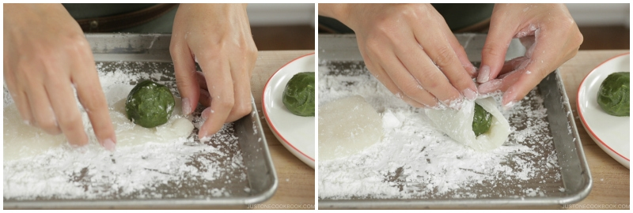

Green Tea Mochi
Green Tea Mochi is a timeless Japanese sweet, chewy with a hint of sweetness.
In this homemade recipe, we will make two versions of the Mochi, one that is white mochi with matcha fillings, and the other is matcha mochi with cream fillings. Enjoy :)
Prep Time: 1 hr
Cook Time: 3 mins
Resting Time: 30 mins
Ingredients
White Mochi with Green Tea Filling
- 3.5 oz White Bean Paste (Shiroan)
- 1 tsp matcha (green tea powder)
- 1.8 oz shiratamako (glutinous rice flour/sweet rice flour) (⅜ cup, 6 Tbsp)
- 2 Tbsp sugar
- 6 Tbsp water (⅜ cup)
Green Mochi with White Bean Filling
- 100 g White Bean Paste (Shiroan)
- 1.8 oz shiratamako (glutinous rice flour/sweet rice flour) (⅜ cup, 6 Tbsp)
- 2 Tbsp sugar
- 1 tsp matcha (green tea powder)
- 6 Tbsp water (⅜ cup)
For Dusting
- ½ cup potato starch/cornstarch
Instructions
- Gather all the ingredients.
Prepare the Fillings
- In a small bowl, combine 100g white bean paste (Shiroan) with 2 g matcha (green tea powder).
- Using a small spatula or spoon, blend the paste and matcha until the mixture is homogeneous.
- Cover the bowl of matcha paste and the other bowl of 100 g white bean paste with plastic wrap. Freeze the bowls of paste for 30 minutes (or refrigerate for 60 minutes) to firm up the texture.
- After 30-60 minutes, take out the bowls.
- We'll start with the white bean paste first by dividing it into thirds. Wet your hands with water.
- Take ⅓ of the paste into your hands and roll into a ball. Continue with the rest.
- Transfer to a plate. Don’t worry if they are not perfectly round.
- Now we'll work on the matcha paste by dividing into thirds. Wet your hands with water and take ⅓ of the paste into your hands.
- Roll each third into a ball. Refrigerate until ready to use.
Make Mochi and Assemble
- First, we make white mochi with matcha filling. In a bowl, combine 50 g Shiratamako and 25 g sugar and whisk well.
- Add 90 g water and whisk well until there is no lump.
- Cover the bowl with a paper towel and microwave for 1 minute (my microwave is 1200W). If you do not have a microwave, you can steam the mixture.
- Wet your silicone spatula with water.
- Mix the mochi dough so that it will be cooked evenly.
- Cover and microwave for an additional 30 seconds (or more/less depends on your microwave strength). The cooked mochi dough will look opaque.
- Spread the potato starch or corn starch well on a baking sheet. Remember, mochi dough will stick if the surface is not covered with starch. Transfer the mochi dough on top of the starch.
- Sprinkle potato starch on top of the mochi dough and on your hands. Your hands must be well coated; otherwise, they will be very sticky.
- Use a dough scraper, divide the mochi dough into equal thirds.
- If one is bigger than the other, cut off the edge and add to the center of the smaller dough. Flatten the dough into a circle shape.
- Place the matcha paste ball in the center of the dough. Bring all four corners of the dough over the ball.
- Bring the rest of the edges to the top.
- Pinch the seam line by pulling the mochi dough.
- If the dough is too sticky, tap the seam line with potato starch. If the dough is covered with too much potato starch, dust it off and pull the dough at the seam so the sticky surface appears and you can seal the seam.
- Once the seam is tightly closed, flip the mochi so the seam line is on the bottom. Twist the mochi a few times on your palm to reshape until even thickness.
- Repeat the same for the next 2 mochi dough.
- Now, we make the green tea mochi with white bean filling. In a bowl, combine 50 g Shiratamako and 25 g sugar and whisk well.
- Add 2 g matcha into the mixture and whisk well.
- Add 90 g water and whisk well until there is no lump.
- Cover the bowl with paper towel and microwave for 1 minute (my microwave is 1200W).
- Wet your silicone spatula with water. Mix the mochi dough so that it will be cooked evenly.
- Cover and microwave for an additional 30 seconds (or more/less depends on your microwave strength). The cooked mochi dough will look opaque.
- Spread the potato starch or cornstarch generously on a baking sheet. Remember, mochi dough will stick if the surface is not covered by the potato starch. Transfer the mochi dough on top of the starch. Sprinkle more starch on top of the mochi dough and on your hands. Your hands must be well coated; otherwise, they will be very sticky.
- Use a dough scraper, divide the mochi dough into equal thirds. If one is bigger than the other, cut off the edge and add to the center of the smaller dough.
- Flatten the dough into a circle shape.
- Place the white bean paste ball in the center of the dough. Bring all four corners of the dough over the ball.
- Then bring the rest of the edges to the top and pinch the seam line by pulling the mochi dough. If the dough is too sticky, tap the seam line with potato starch. If the dough is covered with too much potato starch, dust it off and pull the dough at the seam so the sticky mochi surface will appear and you can seal the seam.
- Once the seam is tightly closed, flip the mochi so the seam line is on the bottom. Twist the mochi a few times on your palm to reshape.
- Repeat the same for the next 2 mochi dough.
To Serve and Keep
- Serve mochi at room temperature. It goes well with green tea or hojicha.
To Store
- The mochi will stay fresh for up to 2-3 days, but it's best to consume on the same day. On warm days, it's best to keep in the refrigerator. Make sure to individually covered so that the mochi will not become dry. You can freeze up to 2 weeks. Defrost first and enjoy or microwave for 10 seconds to make it softer.
Nutrition
Calories: 164 kcal · Carbohydrates: 37 g · Protein: 3 g · Fat: 1 g · Saturated Fat: 1 g · Sodium: 42 mg · Potassium: 112 mg · Fiber: 2 g · Sugar: 19 g · Vitamin A: 67 IU · Vitamin C: 1 mg · Calcium: 10 mg · Iron: 1 mg
